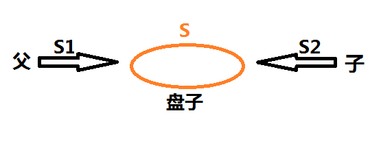

相关临界区:指并发进程中涉及到相同变量的那些操作.可以理解为vb中的公有变量.
PV操作是对信号量进行的操作定义如下:
P操作:将信号量S减去1,若结果小于0,则把调用P(S)的进程之后成等待信号量的状态.
V操作:将信号量加1,若结果不大于0,则释放一个等待信号量S的进程.
原语：说明原子性，即不可拆分的整体。
P操作原语:
{
S=S-1
if S<0 then
wait
}
V操作原语：
{
S=S+1
if S<=0 then
Run
}
PV操作举例说明：一个盘子，最多能容纳1个苹果，此时盘子为空，父亲负责放苹果，儿子负责从盘子中拿走苹果且只有盘子中有苹果时，儿子才可以拿苹果。
如图：

设：S1=1，S2=0（即盘子中没有苹果，父亲可以放，儿子不能拿）
父：
P操作（申请资源，查看自己是否有能力放苹果）
S1=S1-1; S1=0;
V操作（通知儿子盘子里有苹果，可以来拿）
S2=S2+1; S2=1；
子：
P操作：（查看自己能不能拿苹果）
S2=S2-1; S2=0;
V操作：（通知父亲又可以来放苹果）
S1=S1+1; S1=1;
注意事项：
PV操作是同时存在的（有P必有V）。且P操作和V操作的绝对值相加等于盘子的最大容量。
进程的同步和互斥
同步：指在并发进程之间存在一种制约关系，一个进程的执行依赖另一个进程的消息，当一个进程没有得到另一个进程的消息时应等待，直到消息到达才被唤醒。
举例：如上，盘中只能放一个苹果，只用父亲放了，儿子才能拿，此时即协作关系（同步）。
互斥：指当有若干个进程都要使用某一共享资源时，任何时候最多只允许一个进程去使用该资源，其他要使用它的进程必须等待，直到该资源的占用者释放了该资源。
举例：学校有多台打印机，但此时只有一个打印机处于空闲状态，甲和乙同时想使用，但只能一人先用，直到甲用完，乙才能使用----（互斥）
注意事项：
同步：当有且只有一个资源时。如果同上，盘子中最多可以容纳4个苹果的话即不是同步，因为此时父亲和儿子之间并不相互制约，可以独立操作。
互斥：当仅剩一个资源时。不是说只有一个资源而是仅剩下一个资源，多人要使用时为互斥。
PV操作如何实现解耦：
再来说盘子的这个例子，本质上父亲和儿子都是对盘子来操作，我们使用PV算法，将信号量S分成S1和S2。S1表示的是父亲看盘子的状态，S2表示的是儿子看盘子的状态。其实他们两者都是看盘子的状态是否能满足自身的需求，只是父亲和儿子的看法是对立的。父亲认为盘子中没有苹果，我可以工作，儿子认为盘子中有苹果，我才可以工作。这样我们分别设S1和S2，使得父亲和儿子只需观察自己的信号量是否得到满足，不必考虑对方，这样减少了复杂的联系，解耦合。当然当父亲P操作之后还是要通知儿子的。